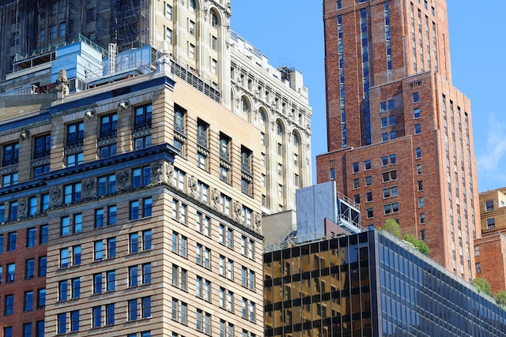
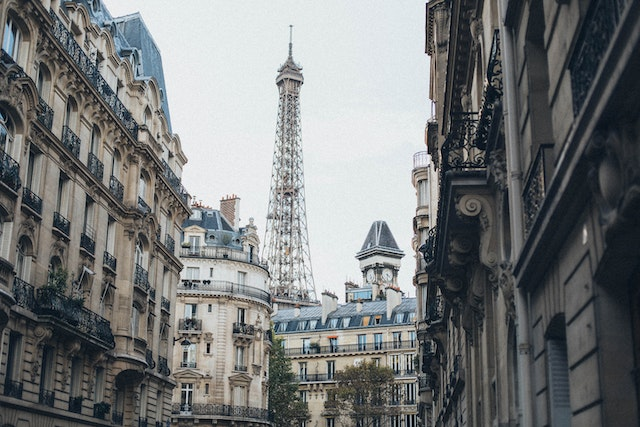
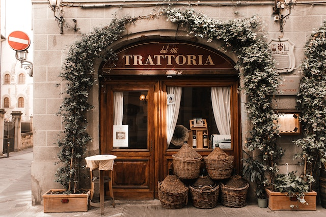

Viagem a Nova York
Nova York, a cidade que nunca dorme, é um ícone de diversidade e energia. Com seus arranha-céus deslumbrantes, Central Park verdejante e uma cena cultural efervescente, Nova York cativa visitantes do mundo inteiro. Das luzes brilhantes da Times Square aos museus de classe mundial, esta metrópole é verdadeiramente inesquecível.
Viagem a Paris
Paris, a Cidade Luz, cativa com sua elegância atemporal. Suas icônicas avenidas, como os Campos Elísios, convidam a passeios românticos. A Torre Eiffel, majestosa, domina o horizonte, e seus museus, como o Louvre, abrigam tesouros artísticos. A gastronomia parisiense é uma celebração do paladar, com croissants frescos e vinhos deliciosos. Paris, uma cidade que encanta a todos com sua cultura e beleza.
Viagem a Itália
A Itália, localizada no sul da Europa, é renomada por sua rica história, culinária deliciosa e paisagens deslumbrantes. Lar de cidades icônicas como Roma, Veneza e Florença, o país encanta os visitantes com sua arquitetura histórica, arte renascentista e praias pitorescas. Com uma cultura vibrante e uma herança influente, a Itália continua a ser um destino turístico de destaque no mundo.